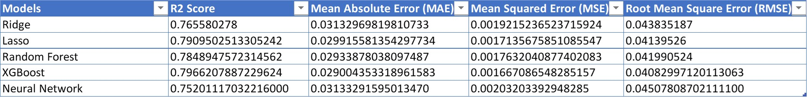

1. Introduction
The real estate market has always been closely related to people's lives.
Utilizing Machine Learning to predict the market based on the existing dataset of the real
estate market has always been a hot topic. Massachusetts Housing Market Prediction Model is
aimed to predict the housing price in different areas in MA and provides insights and
recommendations for traders, researchers, and any interested parties.
Our project used a dataset we collected and preprocessed. We chose five different algorithms,
such as the traditional regression, ensemble learning, and neural networks.
Then we make a comprehensive comparison between different models built by these algorithms.
2. Background and Previous Work
Building a precise tool to predict house prices has been a challenging topic in the real estate
industry because the estimation of a house price involves plenty of factors.
There are several tools that already exist for house price prediction, such as the House Price
Index used by the Federal Housing Finance Agency and the neural Zestimate created by Zillow [1],[2].
However, these tools are either inefficient or constructed based on the factors that only pertain
to the real estate properties themselves. Our MA Housing Market Prediction Model aims to predict
house values by incorporating additional features that were not previously considered in
the existing models. Our model will be specifically designed for house price prediction in Massachusetts
and is dedicated to assisting individuals or cohorts who want to purchase, invest, or sell a home in MA.
In recent years, many studies have explored different machine learning algorithms for solving the
house price prediction problem [3],[4],[5]. Interestingly, there are insufficient studies that
compare the efficiency between machine learning algorithms and deep learning algorithms for this
price prediction problem. Thus, in our study, we will make a comprehensive comparison between
classic regression algorithm, advanced regression techniques, and neural networks.
3. Data Preprocessing
3.1 Generating MA housing dataset & Data Cleaning
The USA Real Estate Dataset [6] was selected as the primary dataset because it contains city name and zip codes,
which we later used as an index to add the additional features. However, this dataset only partially contains
the features that we are interested in for building our models. Therefore, we conducted a thorough search and collected
the data of eight more features, including ‘crime index’, ‘people in poverty’, ‘people commute time’, ‘personal property tax rate’,
‘population density’, ‘school rating’, and ‘median household income’. We combined these data with the original dataset
to create our own MA housing dataset.
To ensure data quality for building our models, we performed cleaning procedures by removing rows with missing values and
eliminating duplicate entries. Below is a summary of our dataset after the data cleaning process:
Dataset size: [6157 rows x 16 columns]
Description of the features:
'bed': the number of bedrooms in the house
'bath': the number of bathrooms in the house
'acre_lot': the lot area of the house
'city': the city name of where the house is located
'state': the state name of where the house is located
'zip_code': the zip code of where the house is located
'house_size': the size of the house
'price': the price of the house
'crime_index': the crime index is an indicator of the crime level in a region.
higher crime index value means more crime.
'People_in_poverty': percentage of people in poverty in a region.
'People_commute_time': mean travel time to work (minutes) in a region
'School_rating': the school rating of high school in a region. Rating score range is
between 1 to 10. A higher rating score means the school is better.
'Personal_property_tax_rate': personal property tax rate in a region.
'Population_density_per_city (population/sq mi)': population density in a region.
'Average Education Index ': the education index is an indicator of the average education
level of the population. A higher education index value means more educated population.
'Median Household Income ': median household income in a region.
We dropped column 'city' and 'state' for later steps, because 'city' and 'zip_code' are similar indicators, and 'state' values are the same for all the examples.
3.2 Exploration Analysis
3.2.1 Eliminating outliers of each column
Box plot of each feature:
The above box plots reveal that more than half of the features have outliers. Data of 'bed',
'bath', 'acre_lot', 'house_size' and 'price' are extremely skewed. Based on the box plots
we removed some outliers. And our dataset size was reduced to 4677 rows.
To confirm the skewness of the data after the previous step, we calculated the skewness
of each column and found that there were still eight features with absolute skewness
greater than 0.5. To avoid any further decrease in our dataset size, we implemented
the Box-Cox transformation technique to adjust the skewness of the features in the table below.
3.2.2 Correlation between each feature and the target
The correlation heatmap of the features and the target is presented below.
It indicates that all the features are correlated with the target ‘price’. Among all the features,
‘bath’ has the most positive correlation with the house price, while ‘Personal_property_tax_rate’ has the most
negative correlation with ‘price’. This implies that houses with a greater number of bathrooms tend to have higher prices.
And the houses in the region with a higher personal property tax rate tend to have lower prices.
Besides, we observed that the regions with lower median household income and higher rates of people in poverty tend to
have lower ratings of school and higher rates of crime. And residents in these regions tend to have lower education attainments.
3.3 Feature Scaling
Due to the significant differences in the scale of each variable, we normalized all the data to a common range between 0 to 1. However, for ‘zip_code’, as it is a categorical feature, we created dummy variables to represent its valuse.
4. Algorithm Selection and Hyperparameter Tuning
Based on our research, we found that this regression problem can be solved through various
kinds of algorithms. We were able to classify them into various categories of traditional,
advanced, and neural network algorithms.
We ended up selecting the Ridge and Lasso regression algos for the traditional approach as
the normal linear regression was overfitting the model. Ridge and Lasso regression use L2 and L1
regularization techniques respectively which help in stabilizing the coefficient estimates and
reducing overfitting. Also, on transforming the categorical data to a vector, we end up having
many features, and these algos also help in feature selection by handling multicollinearity.
The only hyperparameter needed for these models is the regularization strength alpha.
After many iterations, we realized that the best performance was obtained with alpha = 10
for ridge regression and alpha = 0.000006 for lasso regression.
For the advanced regression algos, we used the Random Forest and XGBoost regression techniques
as they came up as potentially good algorithms for our use case from our background research.
One of the reasons for selecting the Random Forest algorithm is that by aggregating multiple
decision trees, it reduces the risk of overfitting and variance, leading to more robust and
accurate predictions. It also does not require feature scaling, and automatically performs
ensemble averaging by combining predictions from multiple decision trees. XGBoost was also
selected because it reduces the risk of overfitting by combining multiple decision trees
(ensemble learning) and using both L1 and L2 regularization techniques. This leads to
higher predictive accuracy. The hyperparameter of the number of epochs was used in the
random forest case, and optimum results were found for 300 epochs. In the case of XGBoost,
multiple hyperparameters were tuned and the best result was obtained with number of epochs
= 130, learning rate = 0.3, max depth of decision trees = 5, and regularization strength
(alpha) = 0.4.
Finally, we wanted to implement a neural network for this problem as it was a completely
different approach for house price prediction and because we studied it in class. Although
this approach is more situated for larger datasets and those using image, text or sequence
data, we wanted to see how the performance would be like. We build a 12 layer neural network
with relu activation function for all layers except the last one. The first layer had 128
neurons and the remaining had 64 neurons except the last one that had just 1 for the output
price prediction. The adam optimizer was used and best performance was obtained with batch
size = 10 and number of epochs = 100. On average, training the neural network took more
time than the other algorithms.
5. Model Results
Traditional
Ensembling Learning
Neural Networks

6. Algorithm Comparison Summary:
- The R2 scores across all models indicate that the model explains most of the variance in the dependent variable since it is higher than 0.7 (1 being perfectly predicted). This means that it can predict the data points with a high level of certainty. In our experiment, the one with the higher R2 is considered preferable as it is an indication of better predictive performance. We can see that XGBoost achieves the highest R2 and therefore the preferred method for prediction using our dataset based on R2 scores.
- Unlike the R2 score, the mean squared error (MAE) accuracy increases when the MAE approaches 0. In this case, we can also see the best predictive model for our data is XGBoost
- As MAE, the closer our MSE gets to 0, the more accurate our models will predict our data. We also notice these are not similar due to the square factor on MSE. As shown by the table, we can see XGBoost outperforming all other models.
- Derived from the MSE, the RMSE, we add the root square to the MSE to add additional sensitivity to outliners (even though we tried to decrease the amount during the pre-processing data phase). Based on our results, XGBoost comes on top and provides the user with the insight that using this model could provide the most accurate predictions when considering prices in a house in the MA region.
7. Challenges
We encountered many challenges while working on our project. First, we need to find a topic that not only has practical significance, but also that our teammates all can participate in and understand, and it is also within our ability to achieve. Another challenge for us is to get our unique MA housing dataset due to the complexity of the raw dataset. We eliminated some features that do not work in the model from the raw dataset, added some features collected by ourselves, and preprocessed some correlations, outliers, and skewness of the dataset. We also used a special way to transform categorical features (zip code or city name) to a vector. The third challenge for us is to use the algorithms on the dataset to get the models. We need to be familiar with and can use coding to implement these algorithms. There is lots of coding work in Google Colab for the project. To improve the performance of the model, we repeatedly tuned the hyperparameters, processed the dataset, and changed the architecture of the models. The most important challenge is working collaboratively online.
8. Conclusion and Future Work
From the inception of this project to the end, we have been able to learn a lot about machine learning in general. Having done some background information, we were able to understand the complexities of house price prediction and did our best to get the highest performance we could. Some key concepts that we learned are the importance of understanding the dataset and cleaning it to get better models, realizing how different hyperparameters affect the algorithm performance and the need for processing the features of the dataset. We believe that better models can be made with work on ensemble learning combining these models we used and compared. Another step would be to further optimize the hyperparameters as we were constrained by time. Finally, we would like to thank the professor, fellow classmates and everyone else who helped us complete this project.
References
- House Price Index. Federal Housing Finance Agency. https://www.fhfa.gov/
- Neural Zestimate. Zillow. https://zillow.mediaroom.com/2021-06-15-Zillow-Launches-New-Neural-Zestimate,-Yielding-Major-Accuracy-Gains
- Quang T. et al. Housing Price Prediction via Improved Machine Learning Techniques. Procedia Computer Science 174 (2020) 433-442.
- Mu J, Wu F, Zhang A. Housing Value Forecasting Based on Machine Learning Methods. Abstract and Applied Analysis 2014; 2014:1–7. doi:10.1155/2014/648047.
- Fan C, Cui Z, Zhong X. House Prices Prediction with Machine Learning Algorithms. Proceedings of the 2018 10th International Conference on Machine Learning and Computing - ICMLC 2018. doi:10.1145/3195106.3195133.
- USA Real Estate Dataset: https://www.kaggle.com/datasets/ahmedshahriarsakib/usa-real-estate-dataset